One line does it: it downloads the newest version and puts it in Fusion's own add-in folder, where Fusion finds it and starts it by itself. Run the same line again to update.
curl -fsSL https://raw.githubusercontent.com/nvdberg/fusion-addins/main/install-mac.sh | bashIt ends with Done: NMJoinery x.y.z is in Fusion's add-in folder.
irm https://raw.githubusercontent.com/nvdberg/fusion-addins/main/install-windows.ps1 | iexIt ends with Done: NMJoinery x.y.z is in Fusion's add-in folder.
SOLID › CREATE now ends with NM Lay Flat, NM Drawer, NM Cabinet and NM Cut List. NM Joint is under SOLID › MODIFY.
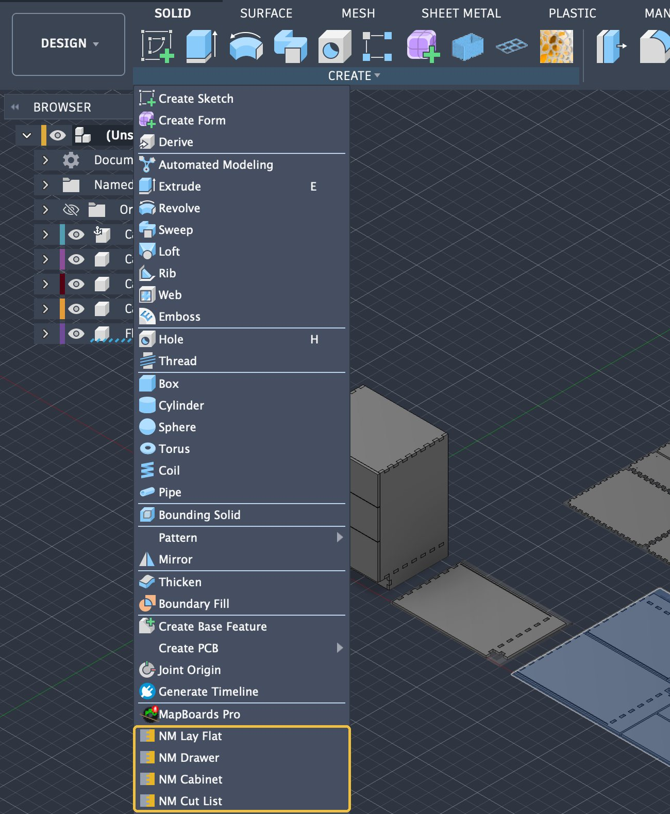
CREATE menu with the four NM buttons outlined in yellow at the bottom">In UTILITIES › ADD-INS › Scripts and Add-Ins (Shift+S) NMJoinery is in the list with Run on and Run on Startup ticked.
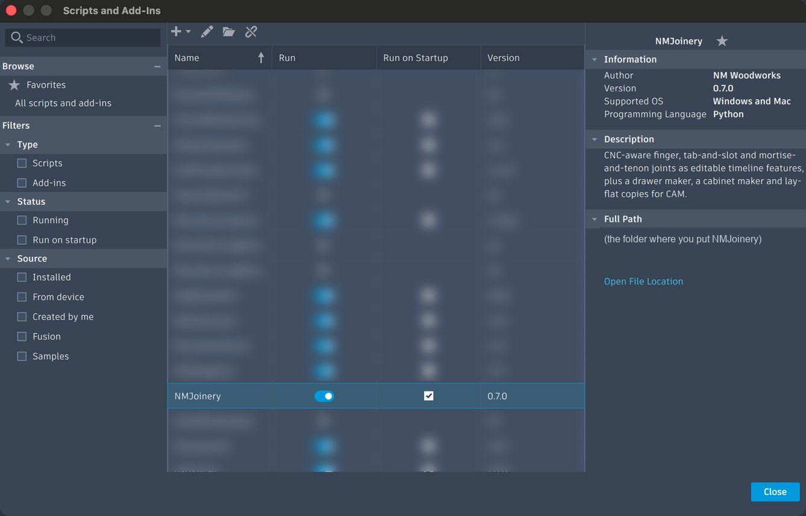
NMJoinery folder to a place it can stay (not Downloads), e.g. Documents/Fusion Add-Ins/NMJoinery.NMJoinery folder
(the one with NMJoinery.manifest inside).
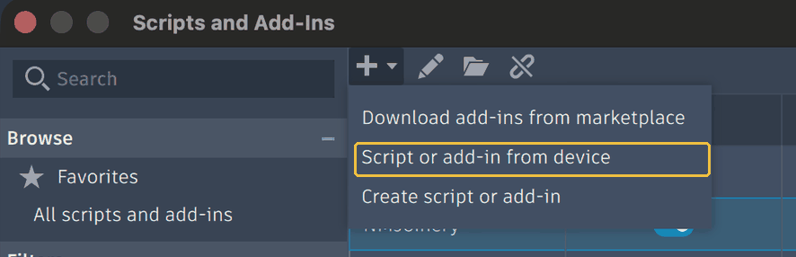
Turns boards that overlap or touch into finger joints, tabs & slots or mortise & tenon, cut for your bit, as one editable item in the timeline.
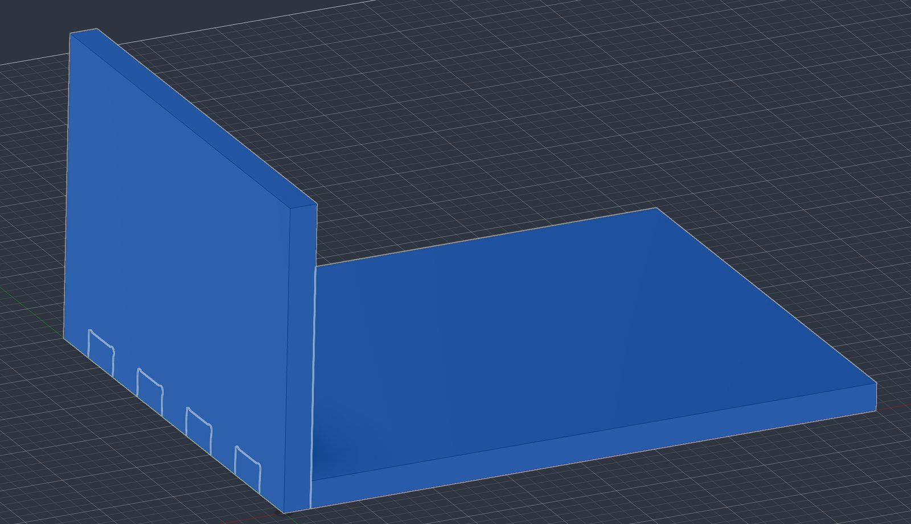
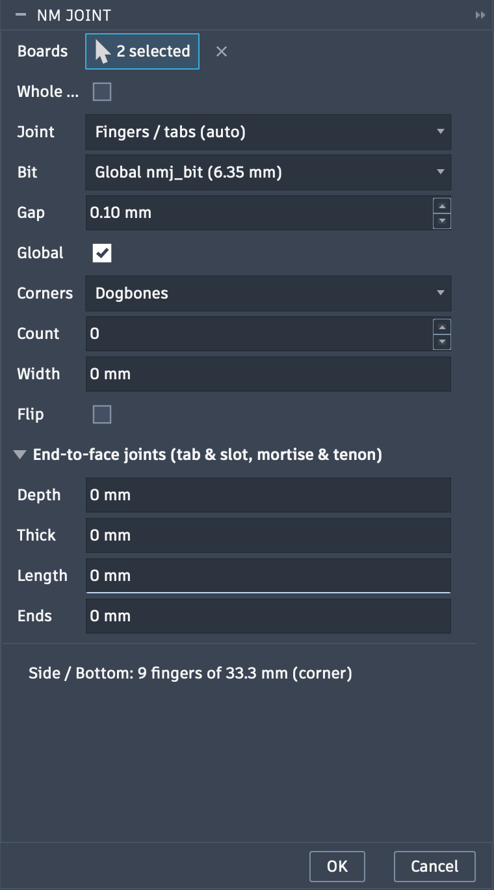
| Boards | Pick 2 or more boards (solid bodies). |
| Whole box | Ticked: click one board and every board of that box is picked too. |
| Joint | Fingers / tabs (auto): chosen from how the boards meet. Mortise & tenon: end-on-face only. |
| Bit | The bit that cuts it. Global nmj_bit = the design parameter (default 1/4" = 6.35 mm). |
| Gap | Clearance per side, default 0.10 mm. Too tight after cutting → bigger; too loose → smaller. |
| Global | Ticked: uses nmj_gap, shared by every ticked joint. Change it once in Change Parameters to loosen or tighten them all. |
| Corners | None (square), Dogbones, Rounded, T-bones sideways, T-bones deep. Dogbones / T-bones let a round bit fit square corners; T-bones show less. |
| Count · Width | Number of fingers / tabs and their width. 0 = automatic (width ≈ 2 × board thickness). |
| Flip | Swaps which board gets the end fingers, or puts tabs at the ends. |
| Depth · Thick · Length · Ends | For tabs and tenons: how deep they go (0 = through), their thickness, length, and the space kept free at both ends. 0 = automatic. |
Hover over any field in Fusion for a short explanation.
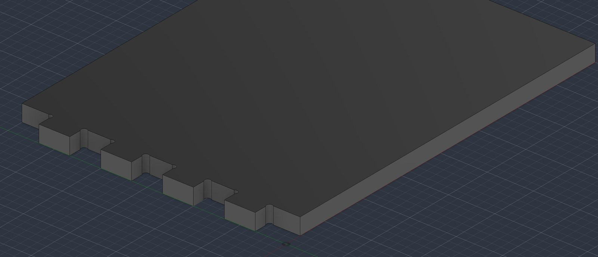
Double-click the joint in the timeline: the same dialog opens. With several joints in one item, the Edit dropdown shows All joints or one joint, with its real count and sizes, and lets you give that joint its own settings.
One dialog builds a whole drawer or box: the boards, the joints and a parameter for every size.
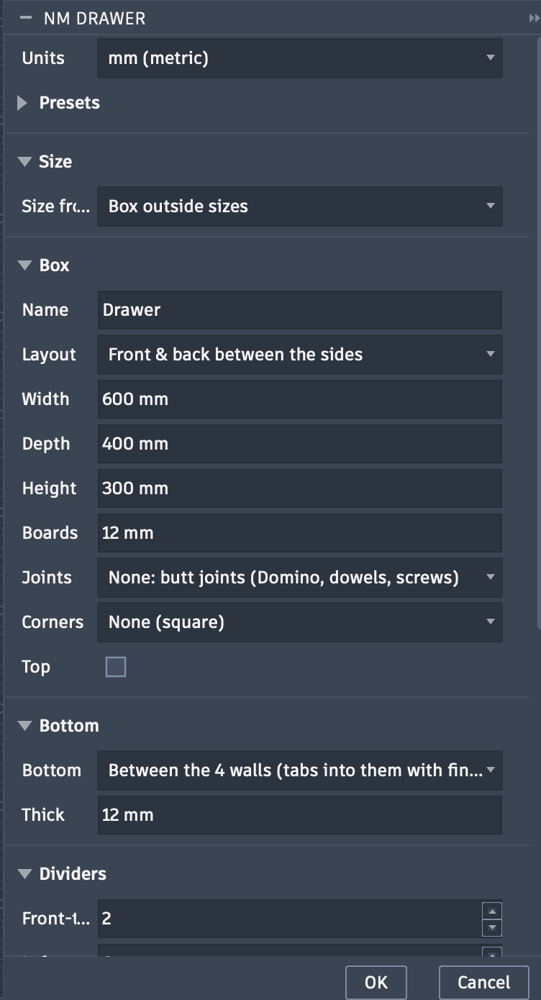
| Units | mm or inch. A plain number you type is in these units (Units = inch: 16 means 16"); type the unit for the other one (300mm, 17.75 in). Switching converts every size. If OK is greyed out, the red line under Units says why. |
| Presets | Type a name under Save as and Save, to keep the whole setup ("Kitchen drawer"). Pick it next time to fill in every field. |
| Size from | Box outside sizes, or Cabinet opening + slides: type the opening and pick the slides; the box is worked out for you. |
| Name | Used in front of every parameter (drawer_w, drawer_h …). |
| Layout | Front & back between the sides, or sides between front & back. |
| Width · Depth · Height | Outside sizes of the box. |
| Boards | Board thickness (1/2" Baltic birch = 12 mm). |
| Joints | Finger joints and tabs (CNC), or None: plain panels for a Domino, dowels or screws. Same sizes either way. |
| Corners | Square, dogbones or T-bones for the joints. |
| Top | Ticked: a closed box. |
| Bottom | Between the 4 walls (tabbed in), or a loose panel in a groove. |
| Dividers | Front-to-back and / or left-to-right; where they cross they half-lap. |
bank_* parameters drives them all.A whole frameless cabinet in one go: sides, bottom, top, back, base and what goes inside, drawers included.
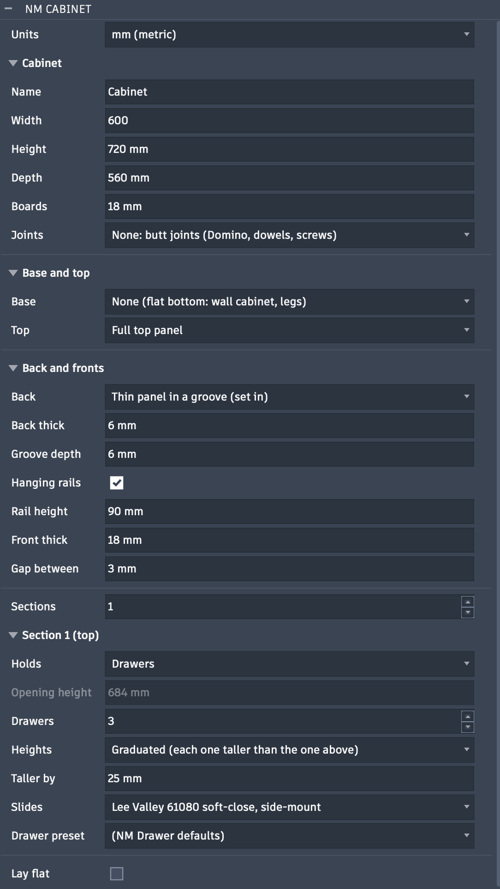
| Units | mm or inch, as in NM Drawer. |
| Name · sizes | Outside width, height (floor to top) and depth. Boards default 18 mm (3/4" Baltic birch). |
| Joints | Tab joints (CNC), or None: plain panels. With None the top sits on the sides and the bottom under them, full width, so a load rests on the sides. |
| Base | Toe kick notched in the sides, a separate plinth, or none (wall cabinet, legs). |
| Top | Full top panel, or two stretchers (under a counter top). |
| Back | Thin panel in a groove (default 6 mm in a 6 mm deep groove), or a solid board flush with the back edges, tabbed in. |
| Hanging rails | Grooved back only: a rail under the top and one on the bottom (90 mm high) to screw the cabinet to the wall. |
| Front thick · Gap between | Doors and drawer fronts (18 mm) cover the carcass edges, with a gap between them (3 mm). |
| Sections | 1 to 4, top to bottom, with a fixed shelf between them. Type the height of each; the bottom one gets what is left. |
| Holds | Drawers (1–8, same or graduated, slides or none, an NM Drawer preset for the box), Doors (one, two, or Auto: two above 600 mm wide) or Open shelves. |
| Shelves · Adjustable | Number of shelves. Adjustable = loose shelves on 5 mm pins (32 mm hole rows); off = fixed, tabbed into the sides. |
| Lay flat | A flat copy of the carcass and of each drawer, for CAM. |
Two ways: double-click the NM item in the timeline, or change the numbers in Change Parameters.
Every drawer, bank of drawers or cabinet made from its dialog (version 0.8.0 and later) gets one item at the end of the timeline. Hover over it and Fusion shows its name, for example NM Cabinet Cabinet.
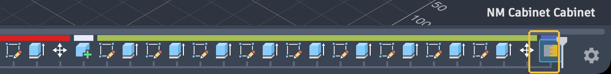
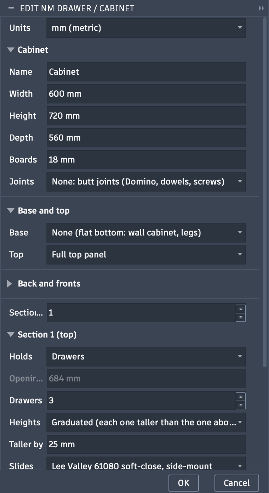
Change what you like and click OK.
MODIFY › Change Parameters (the fx button), then open User Parameters. Every size has a
parameter with the name in front: cabinet_w, cabinet_h, cabinet_d, cabinet_t …, and for a drawer
drawer_w, drawer_h …. Each one has a comment that says what it is. Change a number and the boards, joints, drawers and fronts follow.
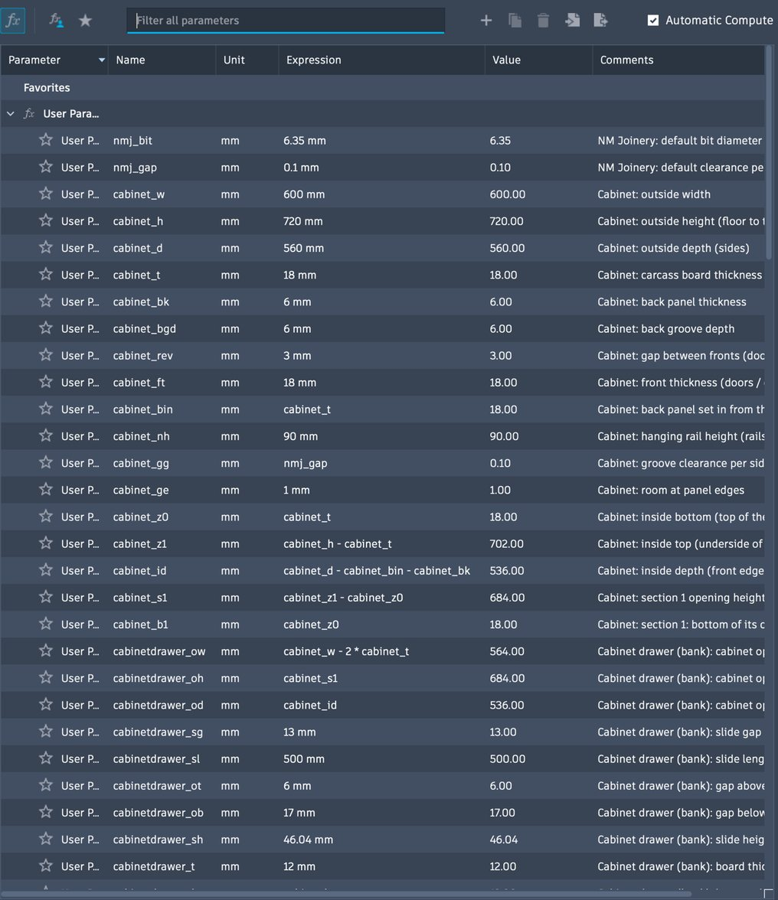
nmj_gap (clearance of every "Global" joint, default 0.1 mm) and nmj_bit (the bit, default 6.35 mm).cabinet_h - cabinet_t) follow the others; change the plain numbers instead.Makes a flat copy of every board, inside face up, in a new component next to the model, ready for CAM. The copies follow every size change.
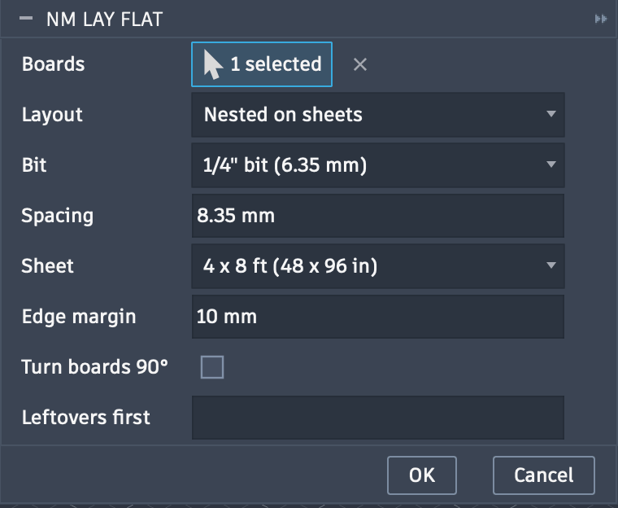
| Boards | Pick boards, or whole components (a cabinet, a drawer). |
| Layout | In a row (one after the other) or Nested on sheets (packed, one row of sheets per thickness). |
| Bit | Spacing = bit + 2 mm (1/4" bit → 8.35 mm). Choose Minimum distance, or type in Spacing, to set your own. |
| Sheet | 4 × 8 ft, 5 × 5 ft Baltic birch, 4 × 4 ft, 2 × 4 ft, 2440 × 1220, 2500 × 1250 mm, or Custom size. |
| Edge margin | Kept free along every sheet edge (10 mm). |
| Turn boards 90° | Off: the long side (grain) stays along the sheet length. |
| Leftovers first | Pieces you have lying around, used before new sheets: 600 x 900; 450 x 1200 x 18 (length × width [× thickness]; plain numbers are mm, 24 in x 30 in works). |
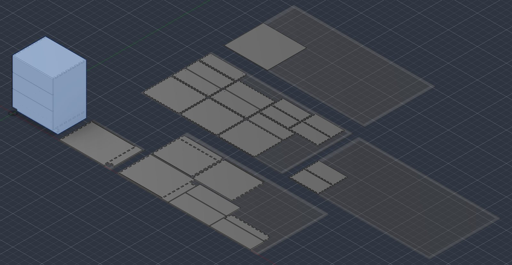
Double-click the Lay Flat feature in the timeline to change the layout, sheet, bit, leftovers or spacing. Resize the model and the copies are nested again (sheets are added or removed).
Every board with its size, to cut by hand or to order sheet goods. Save it as a CSV for Excel, Numbers or Google Sheets.
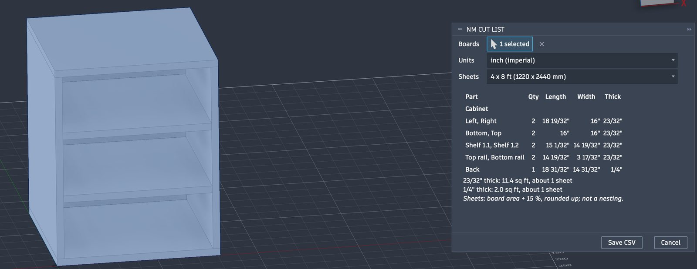
| Boards | Pick a cabinet, a drawer or single boards, or nothing for the whole design. Hidden boards and Lay Flat copies are left out. |
| Units | mm, or inch to the nearest 1/32". |
| Sheets | 4 × 8 ft or 5 × 5 ft for a rough sheet count per thickness (area + 15 %, not a nesting), or no count. |
| Size | The blank you cut: fingers and tabs included, length = the longest side. Same size in the same component is counted together (Left, Right × 2). |
| Save CSV | Asks where to save the file. |
A while after Fusion starts, NMJoinery checks the public release list on GitHub. If there is a newer version it asks:
nm_drawer_presets.json). Running the install line again always works too.Scripts and Add-Ins › NMJoinery › switch Run off and untick Run on Startup. Then quit Fusion and delete the NMJoinery folder: on a Mac in ~/Library/Application Support/Autodesk/Autodesk Fusion 360/API/AddIns, on Windows in %APPDATA%\Autodesk\Autodesk Fusion 360\API\AddIns (or wherever you put it by hand).
16 = 16"). Add a unit to use the other one: 300mm or 11.8 in.